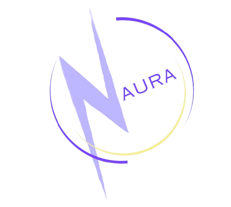

Research
Compared battery approaches, market needs, supply constraints, and cost drivers.
Project / 02
An electric-vehicle battery concept developed as a SHAD design project, connecting technical research with product strategy and clear communication.
Visit Naura website ↗
01 — Overview
Naura explores a cost-conscious, scalable battery proposition for electric-vehicle manufacturers. The project moved from an open design challenge to a focused product concept by examining battery chemistry, supply considerations, customer needs, and the economics behind a realistic launch.
I contributed to the brand direction, research synthesis, rapid prototyping, and website used to communicate the concept. The goal was to turn a complex technical subject into a clear story that a potential partner or customer could understand quickly.
Compared battery approaches, market needs, supply constraints, and cost drivers.
Defined the value proposition, intended customer, and a practical route toward validation.
Built a cohesive identity and web experience around the team’s technical findings.
02 — Skills used
Investigated battery chemistry, constraints, and EV-market context.
Connected customer needs, feasibility, and unit economics into one proposition.
Developed visual direction and messaging to give the concept a distinct identity.
Created a responsive public-facing prototype using HTML, CSS, and GitHub Pages.
03 — Identity
The lightning-bolt mark and restrained palette connect energy, motion, and next-generation transportation.